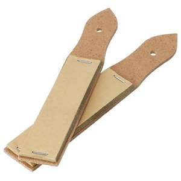
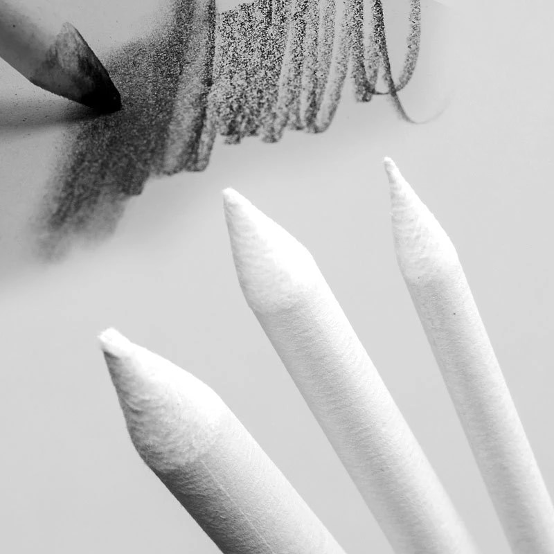
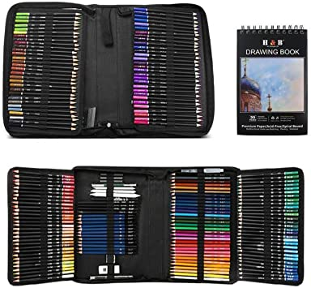

Precisión resistente: con un cilindro hexagonal, obtiene una mayor precisión para los dibujos.
Los grados duros (H) tienen un núcleo de 2,2 mm para líneas nítidas. Los grados suaves negros (B) usan un núcleo de 3,5 mm para líneas más suaves.
SeamiArt - Puntero de papel
$215
Precio Mayoreo: $200

El puntero de recambio de papel de lija combina con el diseño del mango, fácil de sostener;
cuando utilices un trozo de papel de lija, simplemente quítalo y luego utiliza el otro, ahorrando tiempo y energía.
Lapices de Papel
$700
Precio Mayoreo: $680

Disparador de pañuelos funcional después de la mezcla, notarás que tu tortillón se ensucia.
Esto ocurre naturalmente porque recoge partículas de tu dibujo.
DASKING 96PCS
$900
Precio Mayoreo: $880

Este set de lápices de arte profesional viene completo con 96 piezas,
que incluyen una bolsa de lona, 72 lápices de acuarela, 12 bolígrafos de dibujo, 3 lápices de carbón, 1 lápiz de grafito, 1 borrador, 1 sacapuntas, 1 extensor de lápiz, 1 papel de lija y 3 tocones de papel.